×
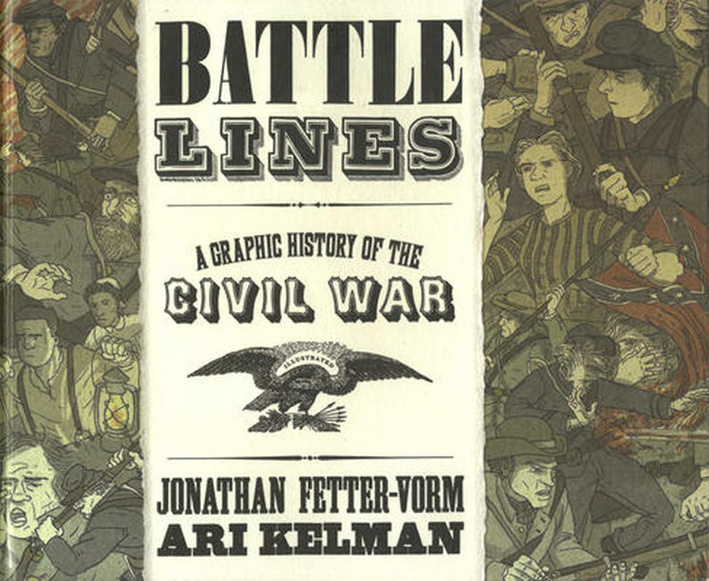
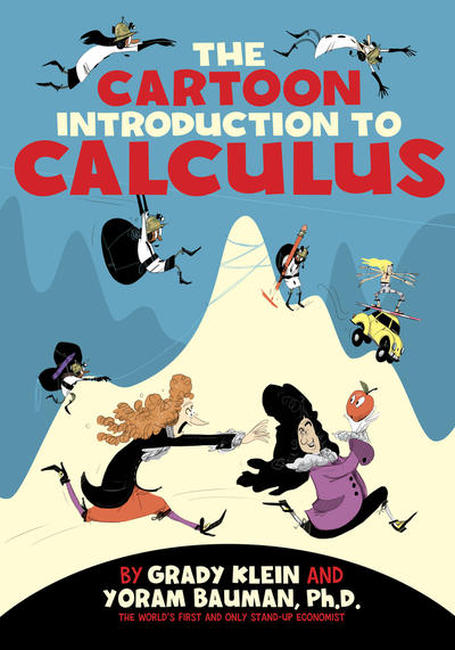
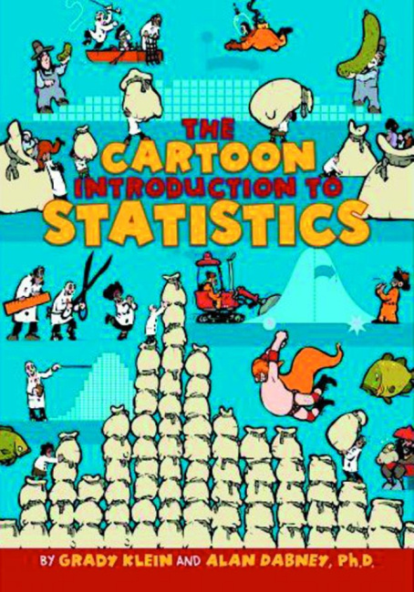
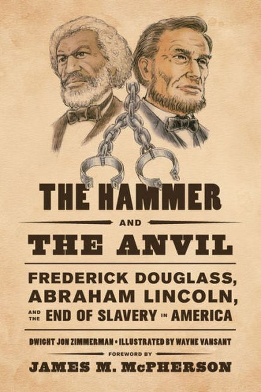
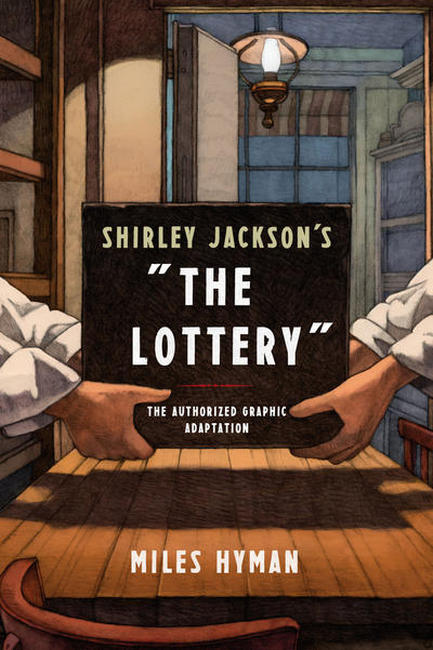
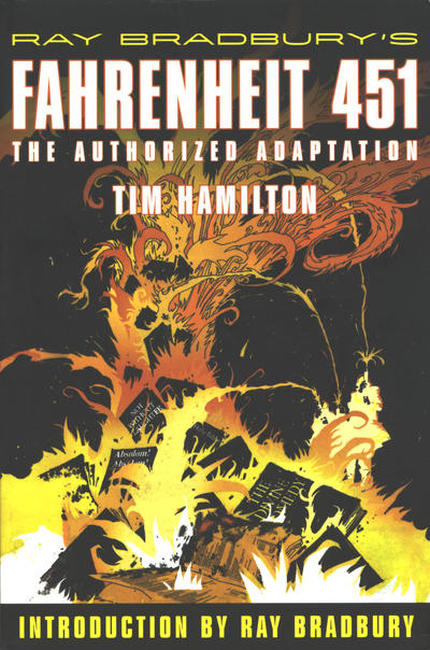
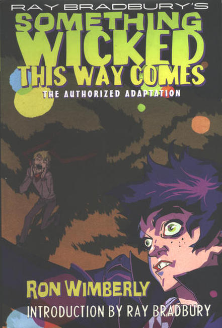
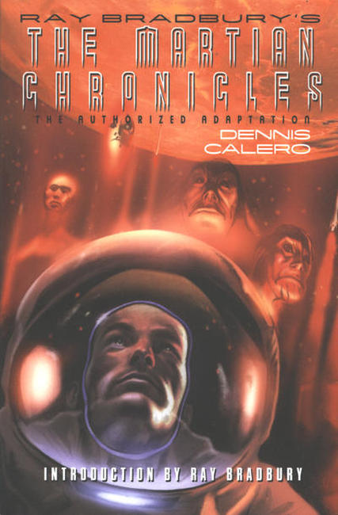
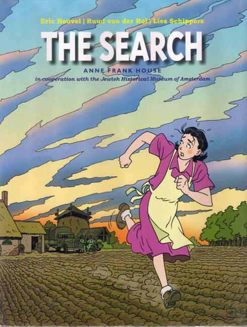
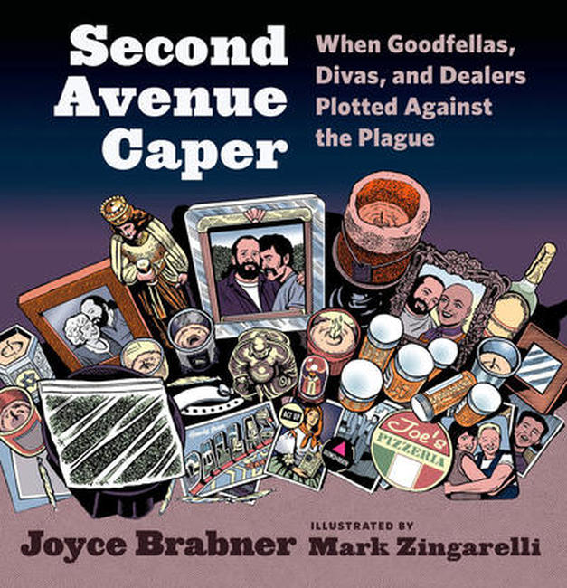
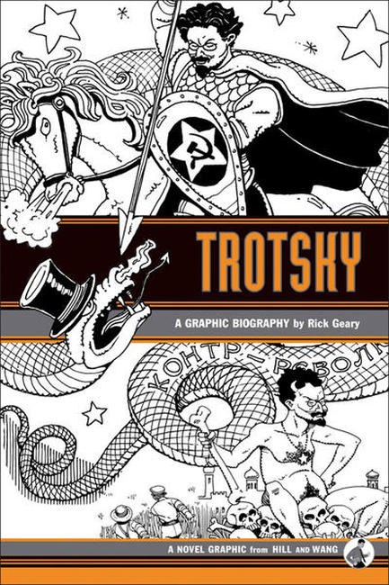
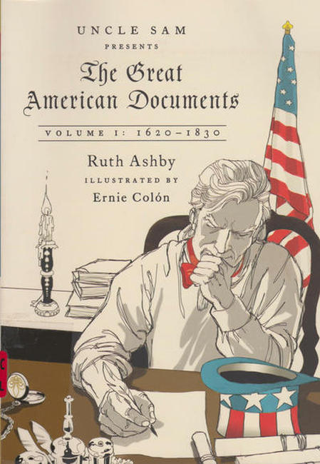
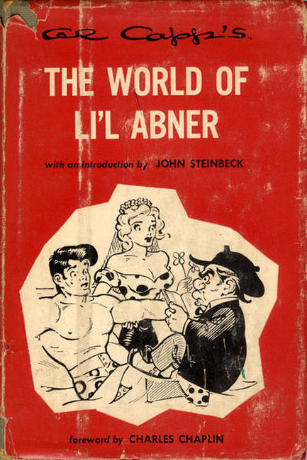
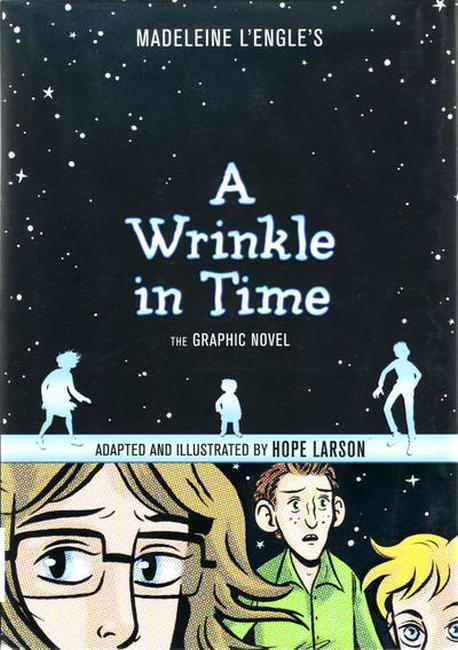
❮
❯
Farrar, Straus and Company was founded in 1946 by Roger W. Straus and John C. Farrar. In 1964 Robert Giroux’s name was added to the roster and the company became Farrar, Straus and Giroux. The firm is renowned for its international list of literary fiction, nonfiction, poetry and children’s books. Currently they are an imprint of MacMillan Books.
FSG at MacMillan
FSG at Facebook
Titles
9/11 Report (2006)
After 9 / 11: America's War on Terror 2008
All Summer Long 2018
All Together Now 2020
Anne Frank: The Anne Frank House Authorized Graphic Biography 2010
Battle Lines: A Graphic History of the Civil War 2015
Beats: A Graphic History 2009
Cartoon Introduction to Calculus 2019
Cartoon Introduction to Economics 2010
Cartoon Introduction to Philosophy 2015
Cartoon Introduction to Statistics 2013
Che: A Graphic Biography 2009
Evolution: The Story of Life on Earth 2011
Family Secret 2009
Hammer and the Anvil: Frederick Douglass, Abraham Lincoln, and the End of Slavery in America 2012
J. Edgar Hoover: A Graphic Biography 2008
Lottery 2016
Malcolm X: A Graphic Biography 2006
Moonbound: Apollo 11 and the Dream of Spaceflight 2019
Not the Israel My Parents Promised Me 2012
Ray Bradbury's Fahrenheit 451: The Authorized Adaptation 2009
Ray Bradbury's Something Wicked This Way Comes: The Authorized Adaptation 2011
Ray Bradbury's The Martian Chronicles: The Authorized Adaptation 2011
Search 2009
Second Avenue Caper: When Goodfellas, Divas, and Dealers Plotted Against the Plague 2014
Speak: The Graphic Novel 2018
Students for a Democratic Society: A Graphic History 2008
Stuff of Life: A Graphic Guide to Genetics and DNA 2009
Ten-Cent Plague: The Great Comic-Book Scare and How It Changed America (2008)
Trinity: A Graphic History of the First Atomic Bomb (2012)
Trotsky: A Graphic Biography 2009
Uncle Sam Presents The Great American Documents 2014
United States Constitution 2008
World of Li'l Abner 1953
Wrinkle in Time: The Graphic Novel 2012


{kind=link}
{kind=link}
{kind=link}
{kind=link}
{kind=link}
{kind=link}
{kind=link}
{kind=link}
{kind=link}
{kind=link}
{kind=link}
{kind=link}
{kind=link}
{kind=link}
{kind=link}
{kind=link}
{kind=link}
{kind=link}
{kind=link}
{kind=link}
{kind=link}
{kind=link}
{kind=link}
{kind=link}
{kind=link}
{kind=link}
{kind=link}
{kind=link}
{kind=link}
{kind=link}
{kind=link}
{kind=link}